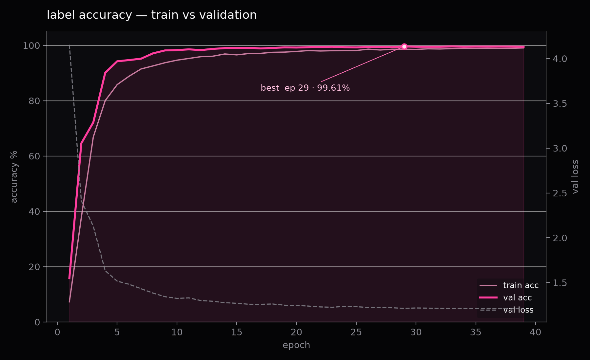
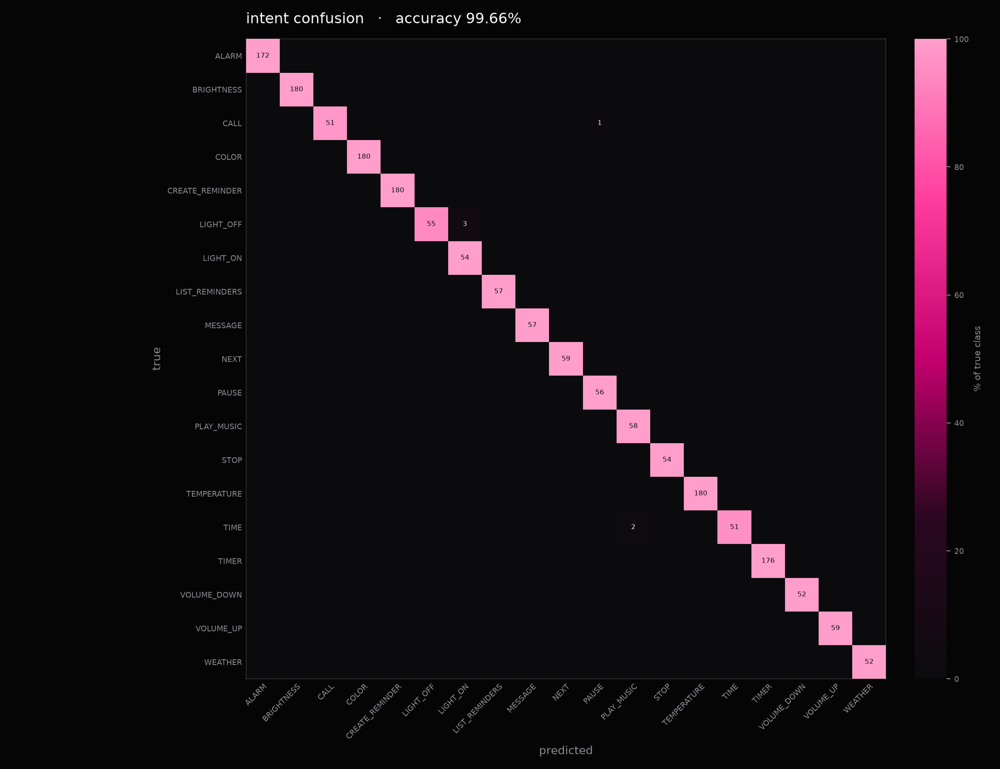
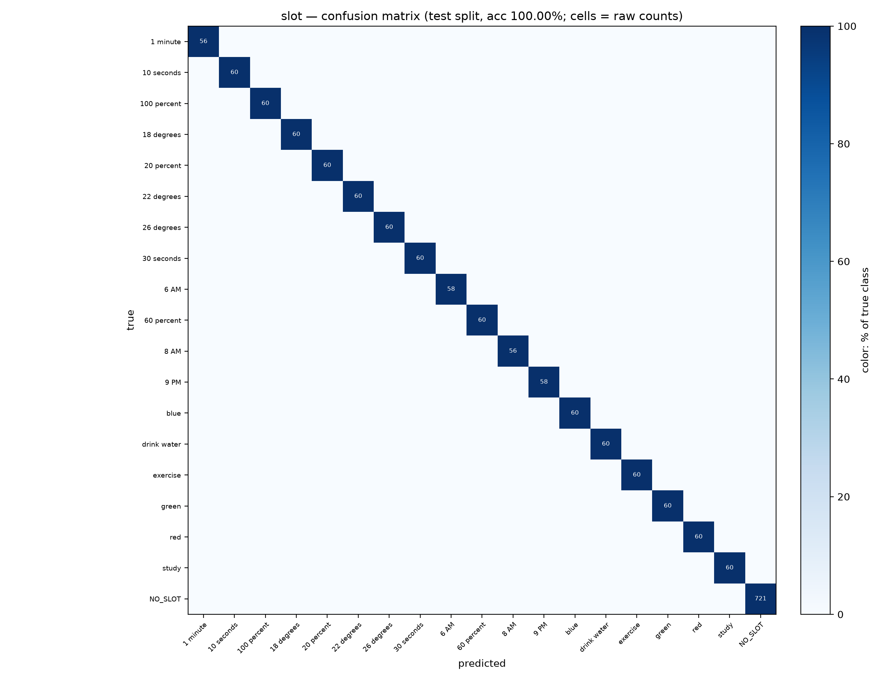

esc / click anywhere to close

| Hardware | Raspberry Pi 4 4GB |
| Wake word | alexa_v0.1 (openWakeWord 0.4.0) |
| Keyword / intent acc | 100.00% (202/202) / 86.14% (174/202) |
| False-accept rate | 0.00% (0/202) |
| Latency p95 / RTF | p95 6.89 ms / RTF 696.7× |
| Runtime | onnxruntime 1.31.0 · 1 thread · TCN.onnx 898 KB |


| Source | LibriSpeech + SilencioPH (Filipino-English) speakers |
| Hours / utts | 8.64 h / 17,851 (14,256 / 1,806 / 1,789 train·val·test) 8,927 clean + 8,924 noisy |
| Speakers | 100 (84 foreign + 16 Filipino-English) · 80 / 10 / 10 train·val·test |
| Labels | 19 intents·18 slot values · 31 command labels |
| Device | Apple MPS |
| Objective | CE (intent) + CE (slot) · label smoothing 0.1 joint decode over 31 valid pairs |
| Optimizer | AdamW (lr 1e-3, wd 0.01) · 2-ep warmup → cosine to 1e-5 over 40 ep |
| Steps / loss | 8,697 steps (39 ep × 223) · 9 min 17 s · final loss 1.207 |
github.com/charrienacor/tiny-alexapublic · one-command run: ./run.sh → http://localhost:8321github.com/markandrian30/AI231/MEX2/Data17,851 utterances · 100 speakers · 19 intents · manifest.csv + labels.json + slots.jsonmodels/TCN.onnx + TCN.pt898 KB · MIT · LICENSE + models/README.md